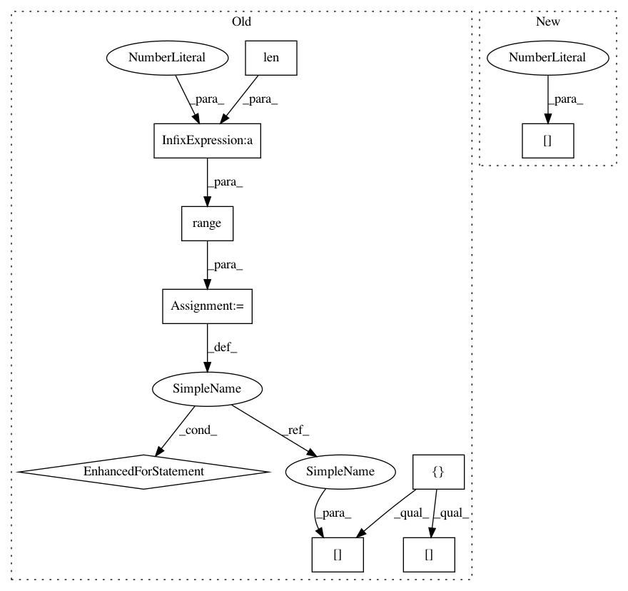

5b3af9ff43bc61f8034f1202a2b57f21c8ee3771,autokeras/graph.py,Graph,_insert_new_layers,#Graph#Any#Any#,346
Before Change
self._insert_new_layers(new_layers, output_id)
def _insert_new_layers(self, new_layers, output_id):
node_ids = []
n_new_layers = len(new_layers)
for i in range(n_new_layers):
node_ids.append(self._add_new_node())
for i in range(n_new_layers - 1):
self._add_edge(new_layers[i], node_ids[i], node_ids[i + 1])
self._add_edge(new_layers[n_new_layers - 1], node_ids[n_new_layers - 1], self.adj_list[output_id][0][0])
self._redirect_edge(output_id, self.adj_list[output_id][0][0], node_ids[0])
def _block_end_node(self, layer_id, block_size):
ret = self.layer_id_to_output_node_ids[layer_id][0]
After Change
self._add_edge(new_layers[-1], temp_output_id, self.adj_list[output_id][0][0])
new_layers[-1].input = self.node_list[temp_output_id]
new_layers[-1].output = self.node_list[self.adj_list[output_id][0][0]]
self._redirect_edge(output_id, self.adj_list[output_id][0][0], new_node_id)
def _block_end_node(self, layer_id, block_size):
ret = self.layer_id_to_output_node_ids[layer_id][0]
In pattern: SUPERPATTERN
Frequency: 3
Non-data size: 9
Instances
Project Name: keras-team/autokeras
Commit Name: 5b3af9ff43bc61f8034f1202a2b57f21c8ee3771
Time: 2018-08-01
Author: jin@tamu.edu
File Name: autokeras/graph.py
Class Name: Graph
Method Name: _insert_new_layers
Project Name: keras-team/keras
Commit Name: 94dbc3042f5a85b399f5ce2859d4e8fbafd235b9
Time: 2017-07-06
Author: me@taehoonlee.com
File Name: tests/keras/backend/backend_test.py
Class Name:
Method Name: check_two_tensor_operation
Project Name: keras-team/autokeras
Commit Name: 5b3af9ff43bc61f8034f1202a2b57f21c8ee3771
Time: 2018-08-01
Author: jin@tamu.edu
File Name: autokeras/graph.py
Class Name: Graph
Method Name: _insert_new_layers
Project Name: keras-team/keras
Commit Name: 94dbc3042f5a85b399f5ce2859d4e8fbafd235b9
Time: 2017-07-06
Author: me@taehoonlee.com
File Name: tests/keras/backend/backend_test.py
Class Name:
Method Name: check_single_tensor_operation